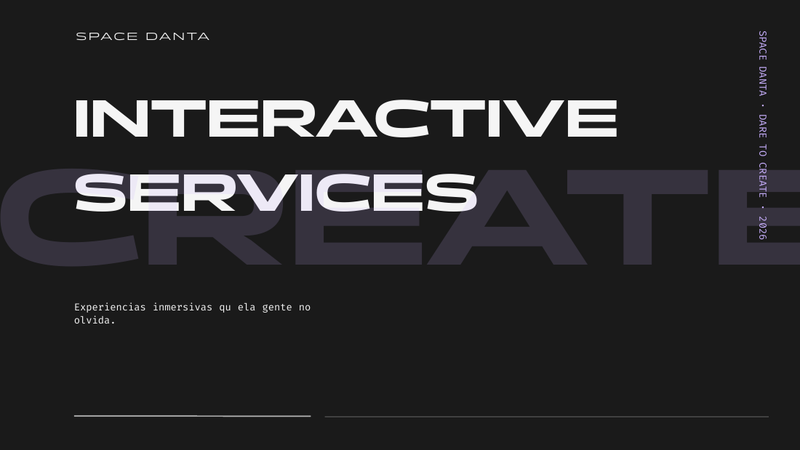
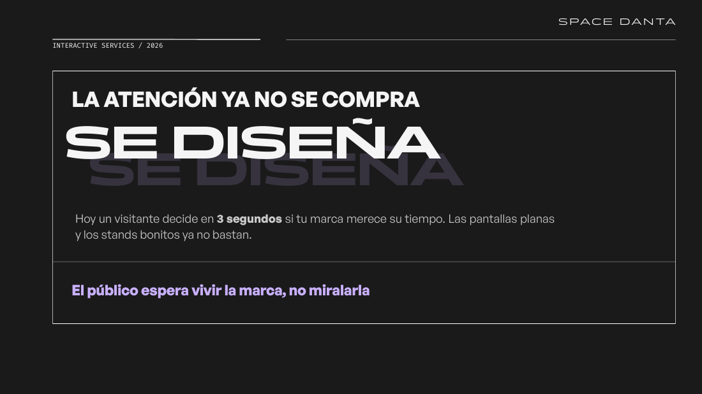
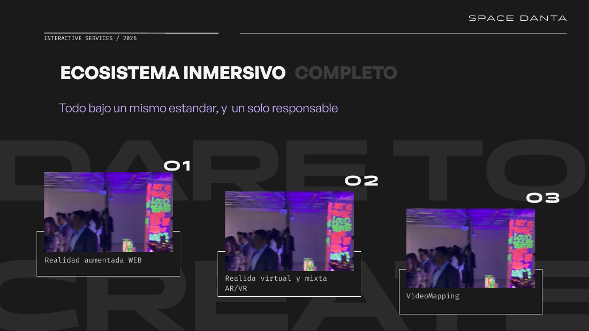
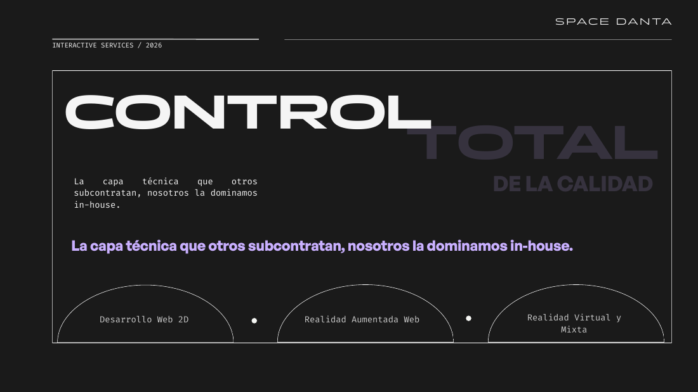

PROPUESTA 01 / Instagram · 4:5
Lo imposible también se diseña
Una portada de marca que conecta la intención creativa con la luz del referente.


1 / 1
01 / SOCIAL MEDIA / SPACE DANTA
Un lenguaje editorial para mostrar la intención detrás de cada imagen. Movimiento, tipografía y composición para Instagram y LinkedIn.
Exploración de portafolio. Las nuevas piezas son propuestas editoriales; no se presentan como una campaña encargada o publicada por el estudio.
EL PRIMER REFERENTE
El MP4 suministrado fija el punto de partida: luz que atraviesa el encuadre, espacio para leer y un cambio de peso que concentra el mensaje.
Referencia visual aportada por Mariana. La autoría individual del video no se atribuye en este caso.
EL LENGUAJE DE LA MARCA
De la presentación Interactive Services: titulares anchos, carbón, blanco y lila. Las palabras a baja intensidad construyen profundidad; las líneas finas organizan el encuadre.




Presentación suministrada como PDF, exportada desde Canva. Se toman las decisiones visuales, sin trasladar sus textos provisionales ni métricas.
REGLAS QUE SE CONVIERTEN EN PIEZAS
DARE TO
CREATE
Una idea clara organiza el recorrido de la imagen.
CONCEPTO / LUZ / COMPOSICIÓN
01 — 1080 × 1350 PX
El carbón y la composición siguen la presentación; las variantes de violeta y los servicios se contrastan con la web oficial de Space Danta . Los tamaños y las retículas de redes son decisiones de esta exploración.
DEL SISTEMA A LA COMPOSICIÓN
21 composiciones desarrolladas con tipografía, fondos y anotaciones editables. Cada serie resuelve una intención de lectura. Toca una pieza para verla en detalle.
PROPUESTA 01 / Instagram · 4:5
Una portada de marca que conecta la intención creativa con la luz del referente.
PROPUESTA 02 / Instagram · Carrusel de 5 páginas
Lectura del MP4 suministrado: decisiones visibles de luz, énfasis y firma. No se inventan etapas de producción.
PROPUESTA 03 / LinkedIn · Documento de 6 páginas
Traducción editorial del proceso descrito por el estudio en su web, desde el objetivo hasta las versiones de entrega.
PROPUESTA 04 / Instagram · Estudio de 3 páginas
La propuesta de materiales se convierte en un estudio de luz usando evidencia disponible del MP4.
PROPUESTA 05 / Instagram 4:5 + LinkedIn horizontal
Una portada concentra el mensaje; la adaptación horizontal explica la decisión por canal.
PROPUESTA 06 / LinkedIn · Documento de 4 páginas
Propuesta de comunicación sobre dirección creativa e IA, basada en el posicionamiento público del estudio.